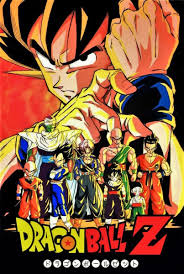
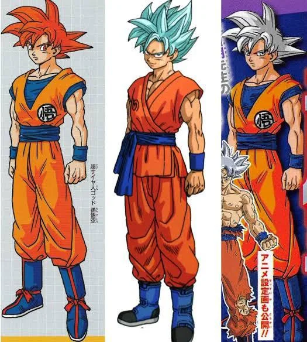
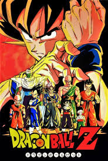
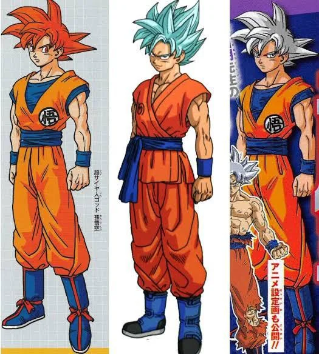
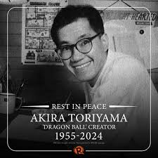

| My goat, Akira Toriyama, is the visionary behind the iconic manga series Dragon Ball. Renowned for his innovative storytelling and dynamic art style, Toriyama's creation has left an indelible mark on the world of manga and anime. Dragon Ball has captivated audiences globally with its epic battles, memorable characters, and imaginative worlds, establishing itself as a cornerstone of popular culture. Toriyama's groundbreaking work has inspired countless creators and continues to resonate with fans, solidifying his status as a true pioneer in the industry. |
|
Art   1984 19932015 |
|  |